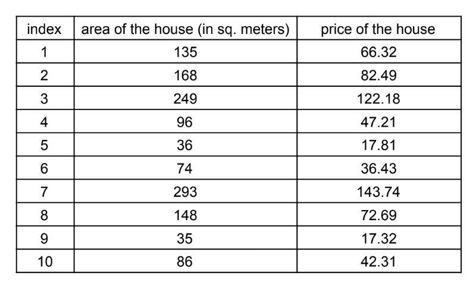
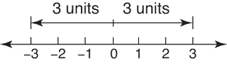
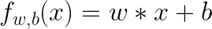
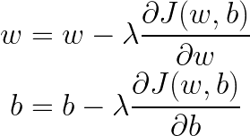

AI Course 1:
Linear Regression and A Quick Look at Model Training
Hi. Skipping all the fudge, let's dive in.
Imagine you have images of cats and dogs and you want an algorithm to classify them, as cats and dogs.
This is called a classification problem since number of possible outcomes of this algorithm is restricted.
There are only two options, dog or cat.
Now imagine you have information about houses, such as number of rooms it has, area of the house in square meters, etc.
And you want to predict price of these houses. This is called a regression problem.
This one is called regression rather than classification because unlike classification problems,
house price can be any number from 0 to infinity. It can also be a negative number, I guess, if the owner pays you at the sale.
In this blog post we will focus on regression problem and how can we train the model we will discuss.
This won't be too deep, so do not expect too much from this blog post alone.
But I'm planning to expand the blog posts to introduce classification problem and deeper look at the concepts we will discuss here.
One last disclaimer is that I recommend checking other resources online or offline to double check what I write here.
I'm not saying what I explained here is wrong but having reading/listening/watching the same content in different sources
probably would help you to have a more broad understanding of everything I will mention in the entire blog.
To understand regression and overall training process of an artificial intelligence model,
let’s use concrete example of predicting house prices.
To make the example simpler, let's say that we only have the information about area of the house in square meters
and price of the house in hundred thousands dollars.
One example of that data can be the following:

Let's define some terms using the table:
1. This table, in total, is our dataset.
2. Price of the house is called target and we denote it with y.
3. Area of the house is called feature and we denote it with x.
Rows in the dataset corresponds to one example in the dataset, a datapoint.
For example, in index of 1, we have an house with area of 135 square meters and the price of that house is $66.32 hundred thousand.
In total we have 10 examples with one feature.
An AI problem consists of 4 parts:
1. A dataset
2. A model
3. A loss function
4. A training algorithm
Let’s start with model since we already saw our dataset.
A model is basically a function. From math, you probably know about line formula.
If you don’t, which is totally OK (learned to say this phrase from Andrew Ng lol), it is the following:
We will call this formula (or function) Linear Regression.
If we were to formalize this formula, which we call Linear regression, becomes a function in the following form:
where
1. m becomes w and we call it weight
2. b stays the same and we call it bias.
So, that is our model. As you see, it is just a function.
Hence, if you want to predict the price of your house based on your house’s area,
you can simply call the function with the area of your house.
For example, if your house is 100 sq. meters then you can call f(100) to "infer",
to see the predicted price of your house.
That's it for the model for now. Let's continue with the loss function.
Let me set the values w and b of Linear Regression. I will set w to 10 and b to 5.5. With these values our model becomes:
Let’s try an example to better understand how prediction is made with the model we have.
We can use the data point with index of 1 from the dataset, which we previously talked about.
Remember that, the example says we have a house with area of 135 sq. meters and its price is 66.32 hundred thousand dollars.
We will call the model with input x = 135:
.png)
We got the results as 1355.5 hundred thousand dollars.
We can only wish to sell a house with area of 135 sq. meters to 13550000 dollars
so it is very obvious that our prediction is way larger than ground truth (which is 6632000).
We don’t want our model to predict something way higher or way lower than ground truth.
We want it to predict house prices similar to true values.
But how can we measure how well our model does? That’s where the loss function comes in.
Loss functions are used to see how well our model does on the dataset we have.
They differ from problem to problem and model to model.
For example, loss function for a regression model would be different from a loss function for a classification model.
For the Linear Regression model we have, we will use the following loss function:

Don't worry if this seems complicated, I'm explaining it below and believe me it is very easy to understand.
Loss function is denoted as J by convention, and is a function of all the model parameters we have
(which are w and b in our example).
Thinking about it, it makes sense that this function varies as model parameters vary since it measures how well our model do.
Let me make it more clear. Remember that, above, I've set model parameters, w to 10 and b to 5.5.
Instead of 10 and 5.5, if I were to set w to 3 and b to 9, then this would constitute a brand new model
since it would predict house prices differently than the previous model.
In fact, what we are trying to achieve is best parameters for a model so that we can estimate house prices more precisely.
If these all are confusing, don't worry. It will be clearer when you dive more in the field.
Feel free to read last few paragraphs again to understand what I've mentioned.
Also, I will probably talk about this more in the upcoming blog posts but if you want to discuss this with me,
I would love to do so, please reach me through my email address.
So, we were talking about loss function. Let's continue with that.
This specific loss function above is called Mean Squared Error, which is a pretty straightforward name for it.
Let's go through the function to see what it is doing.
First thing we see at the function is the summation from 0 to m,
where m is the number of data points we have which is the size of the dataset.
Then this summation is then divided by m, which forms mean part of the name of the function
since what we do is sum all the examples and dividing the sum with the total number of examples we have.
Inside of the summation there is f(x) which corresponds to the prediction we made,
and y which corresponds to the true value of the prediction we made.
We basically take the square of the difference of our prediction and label (name for true value) and sum all of the squared differences.
This is the squared part of the name.
Taking square makes the differences positive, hence making the error positive even if our prediction is lower than the true value y.
Here is a figure to have a better intuition on taking square:

If our prediction were to be lower than true value, then their difference would be negative and that would decrease our error.
In return, that would mean our model is doing a good job making the prediction lower than true value, which would lead to unhealthy training.
Also, having square of the difference penalize the higher distances more.
For example, if the difference of your prediction (f(x)) and true value (y) is 1, then the error is square of 1 which is 1.
But if the difference is 2, then error is square of 2 which is 4. So higher the distance means way higher the error.
Now, we defined a model, which is Linear Regression, as the following:

Here w and b denotes that f is a function of w and b.
And we have a cost (or loss, or objective) function to measure how well we do which is Mean Squared Error and defined as the following:
There is one more thing to go, which is training the model on our dataset using the cost function we defined.
Training the model means to update its parameters to find a model that fits to the data better, to have better predictions.
Remember that I've said this above before.
For example, if the our model predicts a house price of $100K and the house price is $80K,
after training we would want the model to update its parameters to make the prediction something closer to $100K, maybe $98K.
To do this update, we will use a function called Gradient Descent.
For each parameter in the model, we will update the parameter by its derivative multiplied by learning rate lambda.
It might sound confusing on text, but here is the formula of Gradient Descent for Linear Regression we defined above
so that you can understand it better:

Unlike maths, here equal sign (=) does not mean sides are equal but means assigning right of the sign to the left of the sign,
which in formal setting should be denoted as ":=".
What happens in the formula is that we update parameter w by subtracting derivative of loss function (J) with respect to w
which has been multiplied by lambda (a Greek letter, which looks kinda like Latin letter A). Same procedure happens to bias b.
In fact, if the model were to have parameters other than w and b, then these parameters would go through the
same procedure as well. Notice that we take the derivative of the loss function with respect to parameter we want to update.
Lambda here is called learning rate which controls the update size.
If lambda is a small number then the parameter updates are small, meaning less significant change in the model.
If lambda is a large number, parameter updates are also large, meaning more significant change in the model.
To recap, we have a model, which is just a function with parameters w and b.
We pass features to the model to get predicted target values.
Then, we use a loss function to measure how well we do on our predictions and Gradient Descent to update model parameters
to have better model that fits the dataset better.
OK, that was a lot to cover, I guess. Congrats! You've made this far reading the blog post.
In this blog post, you learned:
What is classification and what is regression
What is dataset, what is a feature and what is target value
What is an AI model
What is the loss function
How to train an AI model
In the upcoming posts, you will learn about these concepts more,
as well as how to make our model to work better with concepts such as regularization.
See you at the next blog post.
If you want to reach me for anything, feel very free to do so.
I would love to talk with you about anything related to AI and these blog posts.
My email is palazski@gmail.com